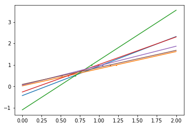
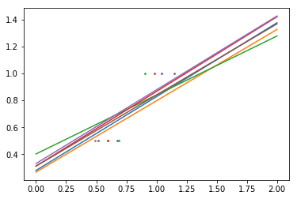

监督学习
All supervised estimators in scikit-learn implement a fit(X,y) method and a predict(X) method to predict unlabeled obsevations X
import numpy as np
from sklearn import datasetsiris = datasets.load_iris()
iris_X = iris.data
iris_y = iris.target
iris_X,iris_y(array([[ 5.1, 3.5, 1.4, 0.2],
[ 4.9, 3. , 1.4, 0.2],
[ 4.7, 3.2, 1.3, 0.2],
[ 4.6, 3.1, 1.5, 0.2],
[ 5. , 3.6, 1.4, 0.2],
[ 5.4, 3.9, 1.7, 0.4],
[ 4.6, 3.4, 1.4, 0.3],
[ 5. , 3.4, 1.5, 0.2],
[ 4.4, 2.9, 1.4, 0.2],
[ 4.9, 3.1, 1.5, 0.1],
[ 5.4, 3.7, 1.5, 0.2],
[ 4.8, 3.4, 1.6, 0.2],
[ 4.8, 3. , 1.4, 0.1],
[ 4.3, 3. , 1.1, 0.1],
[ 5.8, 4. , 1.2, 0.2],
[ 5.7, 4.4, 1.5, 0.4],
[ 5.4, 3.9, 1.3, 0.4],
[ 5.1, 3.5, 1.4, 0.3],
[ 5.7, 3.8, 1.7, 0.3],
[ 5.1, 3.8, 1.5, 0.3],
[ 5.4, 3.4, 1.7, 0.2],
[ 5.1, 3.7, 1.5, 0.4],
[ 4.6, 3.6, 1. , 0.2],
[ 5.1, 3.3, 1.7, 0.5],
[ 4.8, 3.4, 1.9, 0.2],
[ 5. , 3. , 1.6, 0.2],
[ 5. , 3.4, 1.6, 0.4],
[ 5.2, 3.5, 1.5, 0.2],
[ 5.2, 3.4, 1.4, 0.2],
[ 4.7, 3.2, 1.6, 0.2],
[ 4.8, 3.1, 1.6, 0.2],
[ 5.4, 3.4, 1.5, 0.4],
[ 5.2, 4.1, 1.5, 0.1],
[ 5.5, 4.2, 1.4, 0.2],
[ 4.9, 3.1, 1.5, 0.1],
[ 5. , 3.2, 1.2, 0.2],
[ 5.5, 3.5, 1.3, 0.2],
[ 4.9, 3.1, 1.5, 0.1],
[ 4.4, 3. , 1.3, 0.2],
[ 5.1, 3.4, 1.5, 0.2],
[ 5. , 3.5, 1.3, 0.3],
[ 4.5, 2.3, 1.3, 0.3],
[ 4.4, 3.2, 1.3, 0.2],
[ 5. , 3.5, 1.6, 0.6],
[ 5.1, 3.8, 1.9, 0.4],
[ 4.8, 3. , 1.4, 0.3],
[ 5.1, 3.8, 1.6, 0.2],
[ 4.6, 3.2, 1.4, 0.2],
[ 5.3, 3.7, 1.5, 0.2],
[ 5. , 3.3, 1.4, 0.2],
[ 7. , 3.2, 4.7, 1.4],
[ 6.4, 3.2, 4.5, 1.5],
[ 6.9, 3.1, 4.9, 1.5],
[ 5.5, 2.3, 4. , 1.3],
[ 6.5, 2.8, 4.6, 1.5],
[ 5.7, 2.8, 4.5, 1.3],
[ 6.3, 3.3, 4.7, 1.6],
[ 4.9, 2.4, 3.3, 1. ],
[ 6.6, 2.9, 4.6, 1.3],
[ 5.2, 2.7, 3.9, 1.4],
[ 5. , 2. , 3.5, 1. ],
[ 5.9, 3. , 4.2, 1.5],
[ 6. , 2.2, 4. , 1. ],
[ 6.1, 2.9, 4.7, 1.4],
[ 5.6, 2.9, 3.6, 1.3],
[ 6.7, 3.1, 4.4, 1.4],
[ 5.6, 3. , 4.5, 1.5],
[ 5.8, 2.7, 4.1, 1. ],
[ 6.2, 2.2, 4.5, 1.5],
[ 5.6, 2.5, 3.9, 1.1],
[ 5.9, 3.2, 4.8, 1.8],
[ 6.1, 2.8, 4. , 1.3],
[ 6.3, 2.5, 4.9, 1.5],
[ 6.1, 2.8, 4.7, 1.2],
[ 6.4, 2.9, 4.3, 1.3],
[ 6.6, 3. , 4.4, 1.4],
[ 6.8, 2.8, 4.8, 1.4],
[ 6.7, 3. , 5. , 1.7],
[ 6. , 2.9, 4.5, 1.5],
[ 5.7, 2.6, 3.5, 1. ],
[ 5.5, 2.4, 3.8, 1.1],
[ 5.5, 2.4, 3.7, 1. ],
[ 5.8, 2.7, 3.9, 1.2],
[ 6. , 2.7, 5.1, 1.6],
[ 5.4, 3. , 4.5, 1.5],
[ 6. , 3.4, 4.5, 1.6],
[ 6.7, 3.1, 4.7, 1.5],
[ 6.3, 2.3, 4.4, 1.3],
[ 5.6, 3. , 4.1, 1.3],
[ 5.5, 2.5, 4. , 1.3],
[ 5.5, 2.6, 4.4, 1.2],
[ 6.1, 3. , 4.6, 1.4],
[ 5.8, 2.6, 4. , 1.2],
[ 5. , 2.3, 3.3, 1. ],
[ 5.6, 2.7, 4.2, 1.3],
[ 5.7, 3. , 4.2, 1.2],
[ 5.7, 2.9, 4.2, 1.3],
[ 6.2, 2.9, 4.3, 1.3],
[ 5.1, 2.5, 3. , 1.1],
[ 5.7, 2.8, 4.1, 1.3],
[ 6.3, 3.3, 6. , 2.5],
[ 5.8, 2.7, 5.1, 1.9],
[ 7.1, 3. , 5.9, 2.1],
[ 6.3, 2.9, 5.6, 1.8],
[ 6.5, 3. , 5.8, 2.2],
[ 7.6, 3. , 6.6, 2.1],
[ 4.9, 2.5, 4.5, 1.7],
[ 7.3, 2.9, 6.3, 1.8],
[ 6.7, 2.5, 5.8, 1.8],
[ 7.2, 3.6, 6.1, 2.5],
[ 6.5, 3.2, 5.1, 2. ],
[ 6.4, 2.7, 5.3, 1.9],
[ 6.8, 3. , 5.5, 2.1],
[ 5.7, 2.5, 5. , 2. ],
[ 5.8, 2.8, 5.1, 2.4],
[ 6.4, 3.2, 5.3, 2.3],
[ 6.5, 3. , 5.5, 1.8],
[ 7.7, 3.8, 6.7, 2.2],
[ 7.7, 2.6, 6.9, 2.3],
[ 6. , 2.2, 5. , 1.5],
[ 6.9, 3.2, 5.7, 2.3],
[ 5.6, 2.8, 4.9, 2. ],
[ 7.7, 2.8, 6.7, 2. ],
[ 6.3, 2.7, 4.9, 1.8],
[ 6.7, 3.3, 5.7, 2.1],
[ 7.2, 3.2, 6. , 1.8],
[ 6.2, 2.8, 4.8, 1.8],
[ 6.1, 3. , 4.9, 1.8],
[ 6.4, 2.8, 5.6, 2.1],
[ 7.2, 3. , 5.8, 1.6],
[ 7.4, 2.8, 6.1, 1.9],
[ 7.9, 3.8, 6.4, 2. ],
[ 6.4, 2.8, 5.6, 2.2],
[ 6.3, 2.8, 5.1, 1.5],
[ 6.1, 2.6, 5.6, 1.4],
[ 7.7, 3. , 6.1, 2.3],
[ 6.3, 3.4, 5.6, 2.4],
[ 6.4, 3.1, 5.5, 1.8],
[ 6. , 3. , 4.8, 1.8],
[ 6.9, 3.1, 5.4, 2.1],
[ 6.7, 3.1, 5.6, 2.4],
[ 6.9, 3.1, 5.1, 2.3],
[ 5.8, 2.7, 5.1, 1.9],
[ 6.8, 3.2, 5.9, 2.3],
[ 6.7, 3.3, 5.7, 2.5],
[ 6.7, 3. , 5.2, 2.3],
[ 6.3, 2.5, 5. , 1.9],
[ 6.5, 3. , 5.2, 2. ],
[ 6.2, 3.4, 5.4, 2.3],
[ 5.9, 3. , 5.1, 1.8]]),
array([0, 0, 0, 0, 0, 0, 0, 0, 0, 0, 0, 0, 0, 0, 0, 0, 0, 0, 0, 0, 0, 0, 0,
0, 0, 0, 0, 0, 0, 0, 0, 0, 0, 0, 0, 0, 0, 0, 0, 0, 0, 0, 0, 0, 0, 0,
0, 0, 0, 0, 1, 1, 1, 1, 1, 1, 1, 1, 1, 1, 1, 1, 1, 1, 1, 1, 1, 1, 1,
1, 1, 1, 1, 1, 1, 1, 1, 1, 1, 1, 1, 1, 1, 1, 1, 1, 1, 1, 1, 1, 1, 1,
1, 1, 1, 1, 1, 1, 1, 1, 2, 2, 2, 2, 2, 2, 2, 2, 2, 2, 2, 2, 2, 2, 2,
2, 2, 2, 2, 2, 2, 2, 2, 2, 2, 2, 2, 2, 2, 2, 2, 2, 2, 2, 2, 2, 2, 2,
2, 2, 2, 2, 2, 2, 2, 2, 2, 2, 2, 2]))k-Nearest neighbors classfier
#a random permutation to split the data randomly
np.random.seed(0)
indices = np.random.permutation(len(iris_X))
indicesarray([114, 62, 33, 107, 7, 100, 40, 86, 76, 71, 134, 51, 73,
54, 63, 37, 78, 90, 45, 16, 121, 66, 24, 8, 126, 22,
44, 97, 93, 26, 137, 84, 27, 127, 132, 59, 18, 83, 61,
92, 112, 2, 141, 43, 10, 60, 116, 144, 119, 108, 69, 135,
56, 80, 123, 133, 106, 146, 50, 147, 85, 30, 101, 94, 64,
89, 91, 125, 48, 13, 111, 95, 20, 15, 52, 3, 149, 98,
6, 68, 109, 96, 12, 102, 120, 104, 128, 46, 11, 110, 124,
41, 148, 1, 113, 139, 42, 4, 129, 17, 38, 5, 53, 143,
105, 0, 34, 28, 55, 75, 35, 23, 74, 31, 118, 57, 131,
65, 32, 138, 14, 122, 19, 29, 130, 49, 136, 99, 82, 79,
115, 145, 72, 77, 25, 81, 140, 142, 39, 58, 88, 70, 87,
36, 21, 9, 103, 67, 117, 47])iris_X_train = iris_X[indices[:-10]]
iris_y_train = iris_y[indices[:-10]]
iris_X_test = iris_X[indices[-10:]]
iris_y_test = iris_y[indices[-10:]]#创造一个knn分类器
from sklearn.neighbors import KNeighborsClassifier
knn = KNeighborsClassifier()
knn.fit(iris_X_train, iris_y_train)
knn.predict(iris_X_test)array([1, 2, 1, 0, 0, 0, 2, 1, 2, 0])iris_y_testarray([1, 1, 1, 0, 0, 0, 2, 1, 2, 0])#代入all_info的knn
info = np.loadtxt('all_info.txt')
info_X = []
info_y = []
for i in range(len(info)):
info_X.append(info[i][:-1])
info_y.append(info[i][-1])
info_X
info_y
info_X_train = info_X[:240]
info_y_train = info_y[:240]
info_X_test = info_X[240:]
info_y_test = info_y[240:]
knn_info = KNeighborsClassifier()
knn_info.fit(info_X_train,info_y_train)
predict_info = knn_info.predict(info_X_test)
accuracy = 0
for i in range(len(predict_info)):
if predict_info[i] == info_y_test[i]:
accuracy+=1
accuracy = accuracy/len(predict_info)
accuracy0.6129032258064516Linear model : from regression to sparsity
diabetes = datasets.load_diabetes()
diabetes_X_train = diabetes.data[:-20]
diabetes_X_test = diabetes.data[-20:]
diabetes_y_train = diabetes.target[:-20]
diabetes_y_test = diabetes.target[-20:]Linear models: $y = X\beta + \epsilon$
from sklearn import linear_model
regr = linear_model.LinearRegression()
regr.fit(diabetes_X_train, diabetes_y_train)
print(regr.coef_)[ 3.03499549e-01 -2.37639315e+02 5.10530605e+02 3.27736980e+02
-8.14131709e+02 4.92814588e+02 1.02848452e+02 1.84606489e+02
7.43519617e+02 7.60951722e+01]regr.score(diabetes_X_train, diabetes_y_train) #相关系数0.51222621477934993import matplotlib.pyplot as plt
%matplotlib inlineX = np.c_[ .5, 1].T #将array转换成串联形式
Xarray([[ 0.5],
[ 1. ]])小扰动可能会带来大的variance
y = [0.5, 1]
test = np.c_[0, 2].T
regr = linear_model.LinearRegression()
np.random.seed(0)
for _ in range(6):
this_X = 0.1*np.random.normal(size=(2,1)) + X
regr.fit(this_X, y)
plt.plot(test, regr.predict(test))
plt.scatter(this_X, y, s=3)
Ridge regression 用了最小二乘法
regr = linear_model.Ridge(alpha=.1)
np.random.seed(0)
for _ in range(6):
this_X = 0.1*np.random.normal(size=(2,1)) + X
regr.fit(this_X, y)
plt.plot(test, regr.predict(test))
plt.scatter(this_X, y, s=3)
Sparsity
- 为了缓和 the curse of dimensionality ，我们只选取informative的特征
- Ridge regression 会降低 non-informative features 但并不将它们置为0
- Lasso 会将一些系数置为0
- Such methods are called sparse method and sparsity can be seen as an application of Occam’s rezor: prefer simpler models
alphas = np.logspace(-4, -1, 6)
alphasarray([ 0.0001 , 0.00039811, 0.00158489, 0.00630957, 0.02511886,
0.1 ])regr = linear_model.Lasso()
scores = [regr.set_params(alpha=alpha).fit(diabetes_X_train, diabetes_y_train)\
.score(diabetes_X_test, diabetes_y_test) for alpha in alphas]
best_alpha = alphas[scores.index(max(scores))]
regr.alpha = best_alpha
regr.fit(diabetes_X_train, diabetes_y_train)
print(regr.coef_)[ 0. -212.43764548 517.19478111 313.77959962 -160.8303982 -0.
-187.19554705 69.38229038 508.66011217 71.84239008]Support vector machines (SVMs)
Linear SVMs
from sklthe C parameter controls the amount of regulation ,a large C results in less regulation
In a SVM you are searching for two things: a hyperplane with the largest minimum margin, and a hyperplane that correctly separates as many instances as possible. The problem is that you will not always be able to get both things. The c parameter determines how great your desire is for the latter. I have drawn a small example below to illustrate this. To the left you have a low c which gives you a pretty large minimum margin (purple). However, this requires that we neglect the blue circle outlier that we have failed to classify correct. On the right you have a high c. Now you will not neglect the outlier and thus end up with a much smaller margin
<img src=’http://note.youdao.com/yws/public/resource/2bc193fa9e391954cec6d611ba0ae81a/xmlnote/48F0CABE4F4247CE94DA0548BB82882C/300',
style=”width:450px;height:300px;float:middle”>
<img
src=’http://note.youdao.com/yws/public/resource/2bc193fa9e391954cec6d611ba0ae81a/xmlnote/180CA7AB6B1A4DBDB816590267DAAB48/302',
style=”width:450px;height:300px;float:middle”>
logistic = linear_model.LogisticRegression(C=1e5)
logistic.fit(info_X_train, info_y_train)
logistic.predict(info_X_test)array([ 1., 0., 1., 0., 0., 1., 0., 1., 0., 1., 0., 1., 0.,
0., 0., 0., 0., 0., 0., 0., 0., 0., 1., 1., 0., 1.,
0., 0., 0., 0., 0., 0., 0., 0., 1., 0., 1., 0., 0.,
0., 0., 0., 1., 1., 0., 0., 1., 0., 1., 0., 0., 0.,
0., 0., 1., 0., 0., 0., 0., 1., 1., 0.])accuracy = 0
for i in range(len(predict_info)):
if predict_info[i] == info_y_test[i]:
accuracy+=1
accuracy = accuracy/len(predict_info)
accuracy0.6129032258064516<img src=’http://note.youdao.com/yws/public/resource/2bc193fa9e391954cec6d611ba0ae81a/xmlnote/84293DFC216248CDAA1CBAC906522FDA/295',
style=”width:600px;height:600px;float:middle”>